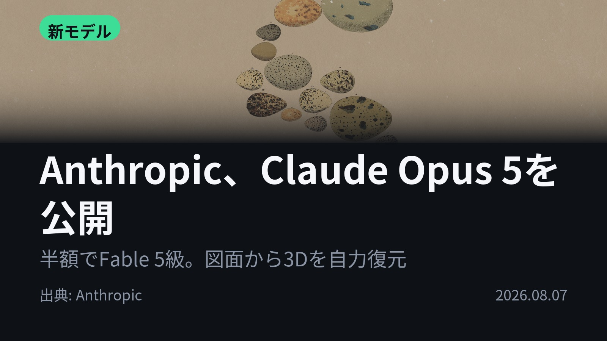
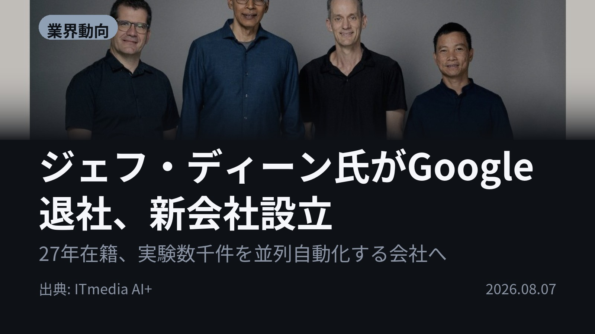
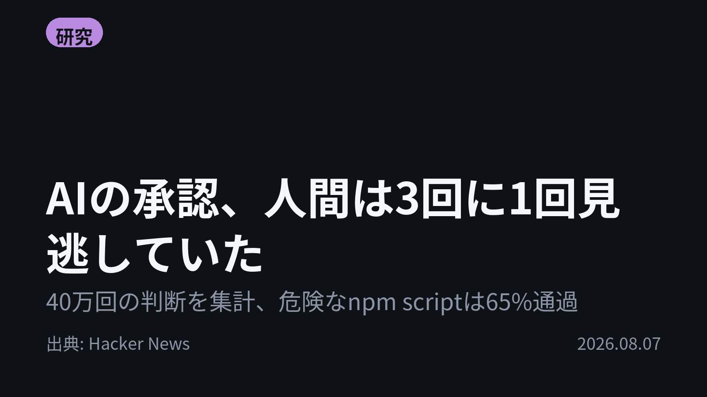
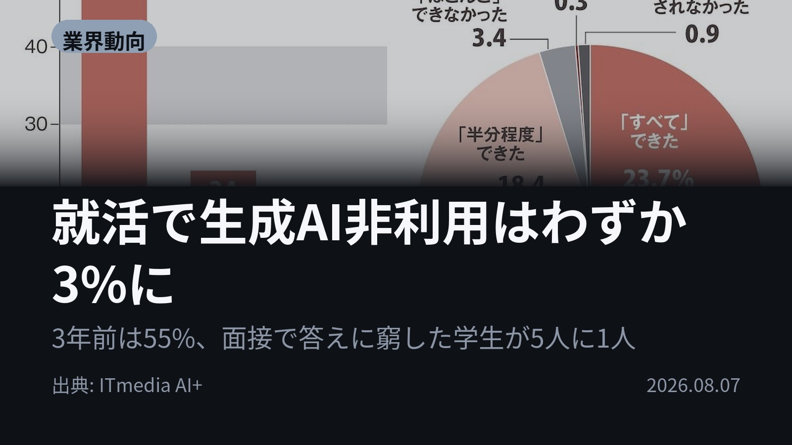
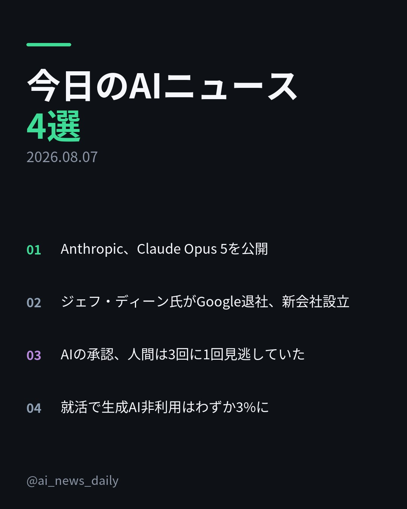
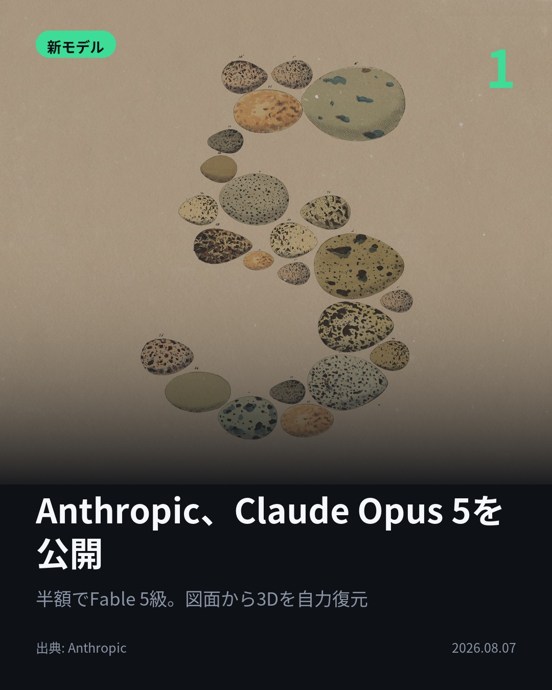
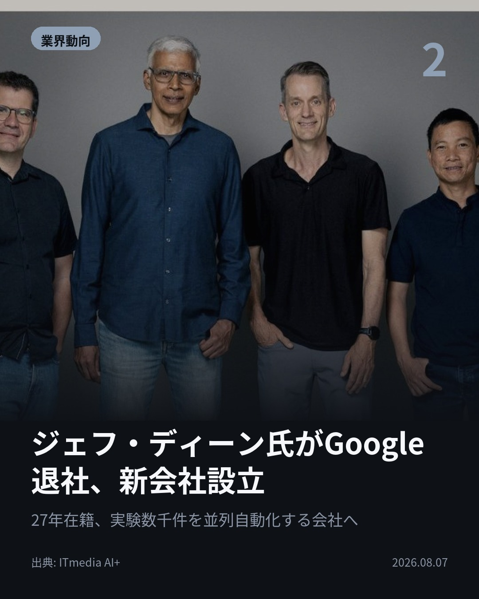
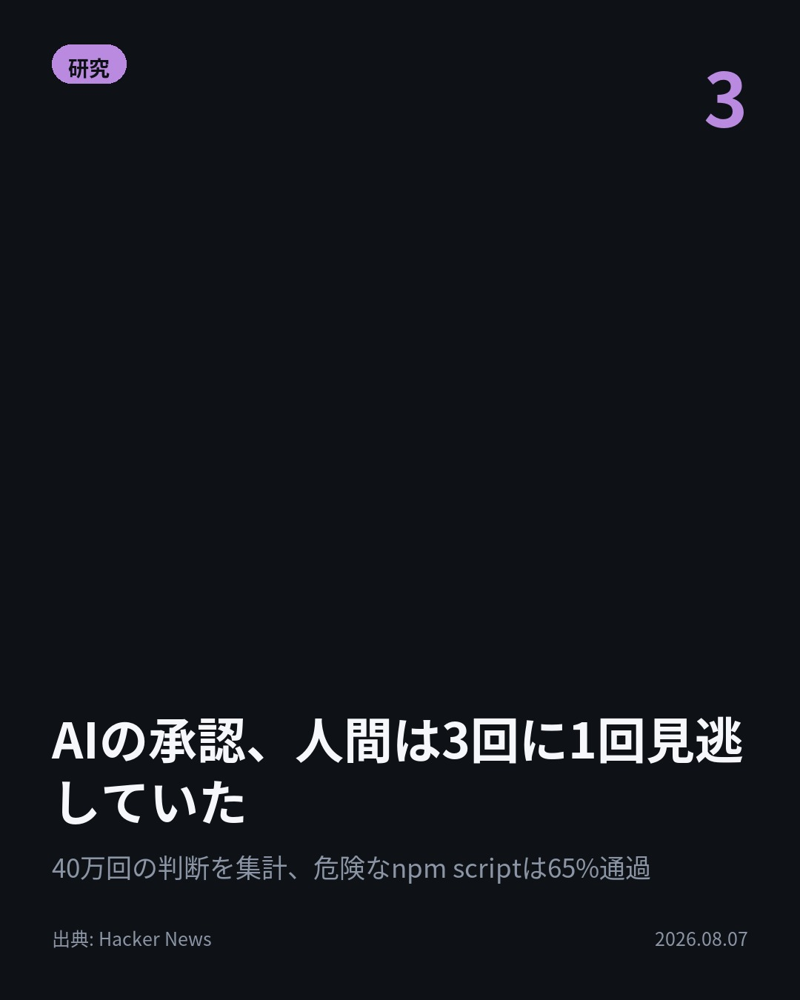
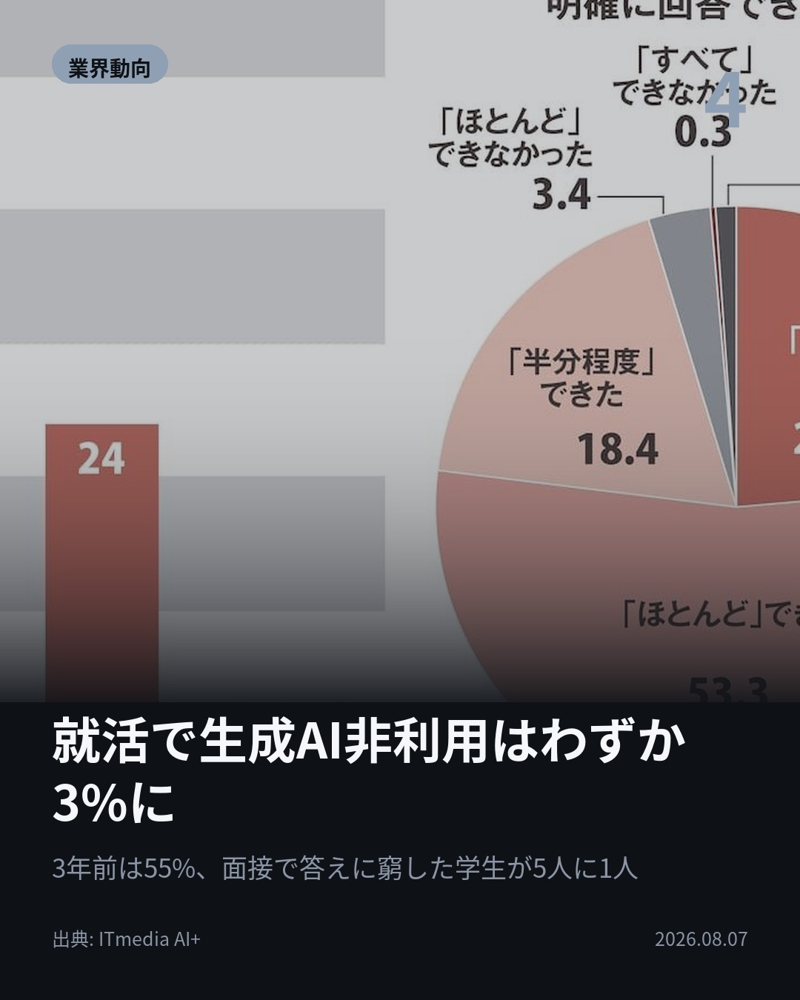

今日のAIニュース 下書き
2026-08-07 生成 08/07 19:41
⚠ ファクト照合で要確認の項目があります。
各ニュースの警告を確認してから投稿してください。
X（4投稿）
Anthropic、Claude Opus 5を公開
原題: Introducing Claude Opus 5

図面を見る手段を与えられないまま、Opus 5は自分で画像認識コードを書いた。 そこから輪郭を読み取り、3Dモデルを復元。他モデルは5回試して解けなかった課題。 Fable 5に迫る知能が、半額で日常に。 #生成AI #ClaudeOpus5（出典: Anthropic）
重み 226 / 280（見た目 133字）
要確認:
［固有名詞］Anthropic — この語が本文に見つかりません
{kind=link}
ジェフ・ディーン氏がGoogle退社、新会社設立
原題: Googleのジェフ・ディーン氏、独立してAI実験を大規模自動化する新会社Discovery Loop設立

27年勤めたGoogleを離れ、ジェフ・ディーン氏が新会社Discovery Loopを設立。 狙いは機械学習研究の実験自動化。数千規模の実験を並列で回す。 Googleは出資者兼クラウドパートナーに回る。 #AI #DiscoveryLoop（出典: ITmedia AI+）
重み 216 / 280（見た目 136字）
要確認:
［固有名詞］PBC — この語が本文に見つかりません
{kind=link}
AIの承認、人間は3回に1回見逃していた
原題: Humans missed 1 in 3 threats approving AI agent commands across 40k game runs

AIの承認プロンプト、本当に中身を見ているか。 40万回超の判断を集計したゲームで、平均で脅威の3回に1回を見逃した。 最多の見逃しは「npm run analyze」で64.7%。 承認は砦になっていない。 #AI #AIエージェント（出典: Hacker News）
重み 220 / 280（見た目 131字）
要確認:
［数値］40万 — この数値の根拠が本文に見つかりません
［数値］9000件 — この数値の根拠が本文に見つかりません
［固有名詞］プロンプト — この語が本文に見つかりません
［固有名詞］コーディングエージェント — この語が本文に見つかりません
［固有名詞］コマンド — この語が本文に見つかりません
［固有名詞］ブラウザゲーム — この語が本文に見つかりません
［固有名詞］セッション — この語が本文に見つかりません
［固有名詞］マイナス — この語が本文に見つかりません
［固有名詞］スクリプト — この語が本文に見つかりません
{kind=link}
就活で生成AI非利用はわずか3%に
原題: 「就活に生成AI利用」ほぼ全員に 面接で内容追及され困惑も

3年前は55%が「就活に生成AIを使っていない」。27年春卒では3%。 最多の使い道はエントリーシートの添削・改善で6割超、自己分析が約5割。 面接で深く追及され答えに窮した学生は5人に1人。 選考の設計が問われている。 #生成AI #就活（出典: ITmedia AI+）
重み 238 / 280（見た目 133字）
要確認:
［固有名詞］ITmedia — この語が本文に見つかりません
{kind=link}
Instagram（カルーセル 6枚）
{kind=link}

1. 表紙
{kind=link}

2. ニュース
{kind=link}

3. ニュース
{kind=link}

4. ニュース
{kind=link}

5. ニュース

6. CTA
「使っていない」は3年で55%→3%。就活の生成AIは、例外から前提に変わりました。 一方、AIを監督する側の人間は危険なコマンドを3回に1回見逃していた——今日の4本です。 1. Claude Opus 5が公開。上位のFable 5に迫る知能を、その半額で使えるのが売りです。 Frontier-Bench v0.1では前世代Opus 4.8の2倍超のスコアを、より低いタスク単価で記録。novelな問題を解くARC-AGI 3では次点モデルの3倍でした。 生命科学系の評価でもOpus 4.8を全項目で上回り、分光データから分子構造を推定する有機化学のタスクで特に伸びています。(Anthropic) 2. ジェフ・ディーン氏がGoogleを退社し、Discovery Loopを設立。サンジェイ・ゲマワット、オリオル・ビニャルス、クオック・レの3氏との共同創業で、形態は公益法人（PBC）です。 仮説を立て、実装し、検証し、手法を改良する——この科学的手法の反復を自動化し、数千規模の実験を並列実行するのが狙い。まず自社の技術開発に適用し「自分たち自身が最初の顧客になる」と説明しています。 Googleは創業時の出資者兼クラウドパートナーとして関わります。(ITmedia AI+) 3. AIコーディングエージェントのコマンド承認を疑似体験するブラウザゲームの集計結果。4万回超のプレイ、40万9000件の承認・拒否の判断が対象です。 平均正答率は66.3%。32.9%のセッションはスコアがマイナスに終わり、7%はすべてのプロンプトを承認していました。 見慣れたスクリプト名の裏に危険な処理を隠すと、見逃し率は28.4%から52.5%へ。危険な中身は履歴ログに表示されていたのに、です。(Hacker News) 4. 27年春卒の大学4年生346人への調査（今年6月実施）。就活で生成AIを「利用していない」は3%で、25年春卒の55%、26年春卒の24%から急減しました。 使い道の1位はエントリーシートの添削・改善で6割超、次いで自己分析が約5割。作成時は「自分の原稿をブラッシュアップ」が43%で、「AIが作ったものをそのまま使用」も3%ありました。 ただ面接で深掘りされたとき「半分程度」しか答えられなかった人が18%、計2割が回答に窮しています。(ITmedia AI+) モデルが強くなるほど、人間の仕事は「作る」から「確かめる」に寄っていきます。承認画面で見逃される3回に1回も、面接で答えに窮した2割も、根は同じかもしれません。 このアカウントでは、毎朝4本のAIニュースを日本語でまとめています。あとで読み返したい方は保存、明日も受け取りたい方はフォローをどうぞ。 #AI #生成AI #人工知能 #AIニュース #テクノロジー #AI活用 #AIエージェント #LLM #Claude #ClaudeOpus5 #Anthropic #DiscoveryLoop #ジェフディーン #GoogleDeepMind #AIセキュリティ #HackerNews #就活 #27卒 #エントリーシート #AInews #machinelearning #techtrends
1358字（Instagram上限 2,200字）
この日の選定理由
Anthropic、Claude Opus 5を公開
最上位モデルの性能を半分の価格で使えるようになり、日常業務でフロンティア級AIを回す前提が変わる。視覚情報を与えられない課題に自作の画像認識パイプラインで対処するなど、自力で検証・反復する能力が実務での差になる。
ジェフ・ディーン氏がGoogle退社、新会社設立
Googleの技術基盤を築いた人物が、AI研究の反復そのものを自動化する会社を作る。Googleが出資側に回る点も含め、研究開発の担い手が外部化していく流れを示す。
AIの承認、人間は3回に1回見逃していた
エージェントのコマンド承認という広く使われている安全策が、実測では機能していないことを示す。見慣れたコマンド名に危険な処理を隠すだけで成功率が倍になる。
就活で生成AI非利用はわずか3%に
就活での生成AI利用が3年で例外から前提へ反転した。AIで作った書類の中身を面接で説明できない学生が2割に上り、選考の設計そのものが問われている。